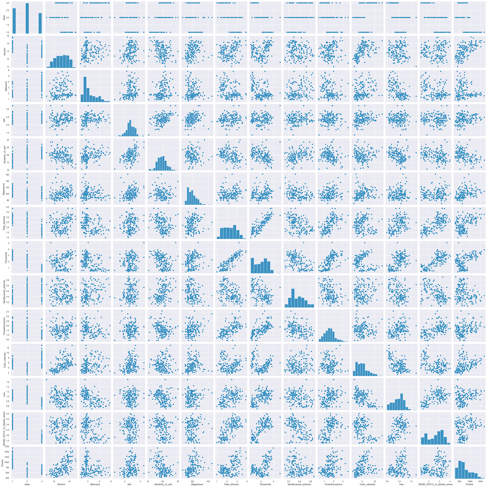
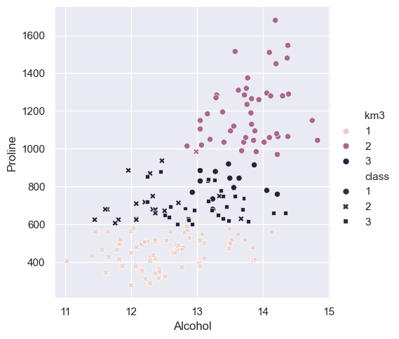
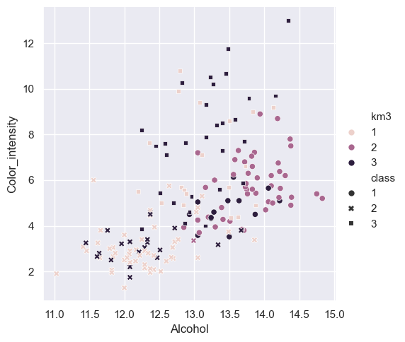
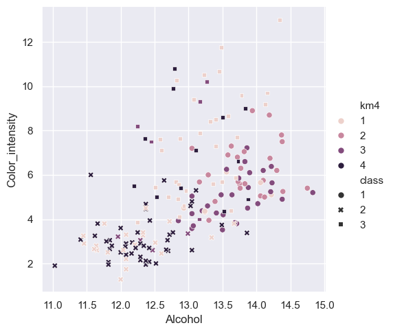

Wine Clustering#
Previously we used classification to see if our model can correctly guess the class of wine harvested based off of its attributes, with clustering we will see if it can correctly identify that there are three distinct class’s. If clustrering does not work well then we may need a more complex model since the data is to close together and requires more nuance.
import seaborn as sns
import numpy as np
from sklearn import datasets
from sklearn.cluster import KMeans
from sklearn import metrics
import pandas as pd
import matplotlib.pyplot as plt
import itertools as it
import string
import imageio.v3 as iio
sns.set_theme(palette='colorblind')
column_names = ["class", "Alcohol", "Malicacid", "Ash", "Alcalinity_of_ash", "Magnesium", "Total_phenols",
"Flavanoids", "Nonflavanoid_phenols", "Proanthocyanins", "Color_intensity", "Hue", "0D280_0D315_of_diluted_wines", "Proline"]
wine_df = pd.read_csv('wine.data', names=column_names)
wine_df.head()
| class | Alcohol | Malicacid | Ash | Alcalinity_of_ash | Magnesium | Total_phenols | Flavanoids | Nonflavanoid_phenols | Proanthocyanins | Color_intensity | Hue | 0D280_0D315_of_diluted_wines | Proline | |
|---|---|---|---|---|---|---|---|---|---|---|---|---|---|---|
| 0 | 1 | 14.23 | 1.71 | 2.43 | 15.6 | 127 | 2.80 | 3.06 | 0.28 | 2.29 | 5.64 | 1.04 | 3.92 | 1065 |
| 1 | 1 | 13.20 | 1.78 | 2.14 | 11.2 | 100 | 2.65 | 2.76 | 0.26 | 1.28 | 4.38 | 1.05 | 3.40 | 1050 |
| 2 | 1 | 13.16 | 2.36 | 2.67 | 18.6 | 101 | 2.80 | 3.24 | 0.30 | 2.81 | 5.68 | 1.03 | 3.17 | 1185 |
| 3 | 1 | 14.37 | 1.95 | 2.50 | 16.8 | 113 | 3.85 | 3.49 | 0.24 | 2.18 | 7.80 | 0.86 | 3.45 | 1480 |
| 4 | 1 | 13.24 | 2.59 | 2.87 | 21.0 | 118 | 2.80 | 2.69 | 0.39 | 1.82 | 4.32 | 1.04 | 2.93 | 735 |
sns.pairplot(wine_df)
<seaborn.axisgrid.PairGrid at 0x2069f7b7170>

wine_X = wine_df.drop(columns=['class'])
wine_X.head()
| Alcohol | Malicacid | Ash | Alcalinity_of_ash | Magnesium | Total_phenols | Flavanoids | Nonflavanoid_phenols | Proanthocyanins | Color_intensity | Hue | 0D280_0D315_of_diluted_wines | Proline | |
|---|---|---|---|---|---|---|---|---|---|---|---|---|---|
| 0 | 14.23 | 1.71 | 2.43 | 15.6 | 127 | 2.80 | 3.06 | 0.28 | 2.29 | 5.64 | 1.04 | 3.92 | 1065 |
| 1 | 13.20 | 1.78 | 2.14 | 11.2 | 100 | 2.65 | 2.76 | 0.26 | 1.28 | 4.38 | 1.05 | 3.40 | 1050 |
| 2 | 13.16 | 2.36 | 2.67 | 18.6 | 101 | 2.80 | 3.24 | 0.30 | 2.81 | 5.68 | 1.03 | 3.17 | 1185 |
| 3 | 14.37 | 1.95 | 2.50 | 16.8 | 113 | 3.85 | 3.49 | 0.24 | 2.18 | 7.80 | 0.86 | 3.45 | 1480 |
| 4 | 13.24 | 2.59 | 2.87 | 21.0 | 118 | 2.80 | 2.69 | 0.39 | 1.82 | 4.32 | 1.04 | 2.93 | 735 |
Theres only three classes
Km = KMeans(n_clusters=3)
Km.__dict__
{'n_clusters': 3,
'init': 'k-means++',
'max_iter': 300,
'tol': 0.0001,
'n_init': 'auto',
'verbose': 0,
'random_state': None,
'copy_x': True,
'algorithm': 'lloyd',
'feature_names_in_': array(['class', 'Alcohol', 'Malicacid', 'Ash', 'Alcalinity_of_ash',
'Magnesium', 'Total_phenols', 'Flavanoids', 'Nonflavanoid_phenols',
'Proanthocyanins', 'Color_intensity', 'Hue',
'0D280_0D315_of_diluted_wines', 'Proline', 'km3'], dtype=object),
'n_features_in_': 15,
'_tol': 0.6588942316341594,
'_n_init': 1,
'_algorithm': 'lloyd',
'_n_threads': 4,
'cluster_centers_': array([[2.25806452e+00, 1.29298387e+01, 2.50403226e+00, 2.40806452e+00,
1.98903226e+01, 1.03596774e+02, 2.11112903e+00, 1.58403226e+00,
3.88387097e-01, 1.50338710e+00, 5.65032258e+00, 8.83967742e-01,
2.36548387e+00, 7.28338710e+02, 5.32258065e-01],
[1.02127660e+00, 1.38044681e+01, 1.88340426e+00, 2.42617021e+00,
1.70234043e+01, 1.05510638e+02, 2.86723404e+00, 3.01425532e+00,
2.85319149e-01, 1.91042553e+00, 5.70255319e+00, 1.07829787e+00,
3.11404255e+00, 1.19514894e+03, 1.14893617e+00],
[2.27536232e+00, 1.25166667e+01, 2.49420290e+00, 2.28855072e+00,
2.08231884e+01, 9.23478261e+01, 2.07072464e+00, 1.75840580e+00,
3.90144928e-01, 1.45188406e+00, 4.08695651e+00, 9.41159420e-01,
2.49072464e+00, 4.58231884e+02, 1.00000000e+00]]),
'_n_features_out': 3,
'labels_': array([1, 1, 1, 1, 0, 1, 1, 1, 1, 1, 1, 1, 1, 1, 1, 1, 1, 1, 1, 0, 0, 0,
1, 1, 0, 0, 1, 1, 0, 1, 1, 1, 1, 1, 1, 0, 0, 1, 1, 0, 0, 1, 1, 0,
0, 1, 1, 1, 1, 1, 1, 1, 1, 1, 1, 1, 1, 1, 1, 2, 0, 2, 0, 2, 2, 0,
2, 2, 0, 0, 0, 2, 2, 1, 0, 2, 2, 2, 0, 2, 2, 0, 0, 2, 2, 2, 2, 2,
0, 0, 2, 2, 2, 2, 2, 0, 0, 2, 0, 2, 0, 2, 2, 2, 0, 2, 2, 2, 2, 0,
2, 2, 0, 2, 2, 2, 2, 2, 2, 2, 0, 2, 2, 2, 2, 2, 2, 2, 2, 2, 0, 2,
2, 0, 0, 0, 0, 2, 2, 2, 0, 0, 2, 2, 0, 0, 2, 0, 0, 2, 2, 2, 2, 0,
0, 0, 2, 0, 0, 0, 2, 0, 2, 0, 0, 2, 0, 0, 0, 0, 2, 2, 0, 0, 0, 0,
0, 2]),
'inertia_': 2370803.697520736,
'n_iter_': 3}
wine_df['km3'] = Km.fit_predict(wine_X)
wine_df['km3'] = wine_df['km3'] + 1 #This alignes the class's so km3 shows 1-3 not 0-2
wine_df.head()
C:\ProgramData\anaconda3\Lib\site-packages\sklearn\cluster\_kmeans.py:1446: UserWarning: KMeans is known to have a memory leak on Windows with MKL, when there are less chunks than available threads. You can avoid it by setting the environment variable OMP_NUM_THREADS=1.
warnings.warn(
| class | Alcohol | Malicacid | Ash | Alcalinity_of_ash | Magnesium | Total_phenols | Flavanoids | Nonflavanoid_phenols | Proanthocyanins | Color_intensity | Hue | 0D280_0D315_of_diluted_wines | Proline | km3 | |
|---|---|---|---|---|---|---|---|---|---|---|---|---|---|---|---|
| 0 | 1 | 14.23 | 1.71 | 2.43 | 15.6 | 127 | 2.80 | 3.06 | 0.28 | 2.29 | 5.64 | 1.04 | 3.92 | 1065 | 2 |
| 1 | 1 | 13.20 | 1.78 | 2.14 | 11.2 | 100 | 2.65 | 2.76 | 0.26 | 1.28 | 4.38 | 1.05 | 3.40 | 1050 | 2 |
| 2 | 1 | 13.16 | 2.36 | 2.67 | 18.6 | 101 | 2.80 | 3.24 | 0.30 | 2.81 | 5.68 | 1.03 | 3.17 | 1185 | 2 |
| 3 | 1 | 14.37 | 1.95 | 2.50 | 16.8 | 113 | 3.85 | 3.49 | 0.24 | 2.18 | 7.80 | 0.86 | 3.45 | 1480 | 2 |
| 4 | 1 | 13.24 | 2.59 | 2.87 | 21.0 | 118 | 2.80 | 2.69 | 0.39 | 1.82 | 4.32 | 1.04 | 2.93 | 735 | 3 |
sns.pairplot(data=wine_df,hue='km3')
<seaborn.axisgrid.PairGrid at 0x206a9f9fb30>

Observations#
All of these plots are close unless Proline is involved in compairison, this will need to be distinguished and focused on.
sns.relplot(data=wine_df,x = 'Alcohol',y='Proline',
hue='km3',style='class')
<seaborn.axisgrid.FacetGrid at 0x206c399ede0>

sns.relplot(data=wine_df,x = 'Alcohol',y='Color_intensity',
hue='km3',style='class')
<seaborn.axisgrid.FacetGrid at 0x206c2fbede0>

metrics.silhouette_score(wine_X,wine_df['km3'])
0.571138193786884
Model comparison#
The metrics score is 0.57 pushing it closer to 1 than 0 but not by much. Color_intensity by Alcohol shows how the model is really struggling to make accurate guesses since the data is so close together. Even while using more distince atributes like Proline, these charts show how bad the model is preforming. This shows classification is a much better suited model for this data, its accuracy score was around 80% at its highest and 70% at its lowest.
Testing with alternative KMeans#
Km2 = KMeans(n_clusters=2)
Km4 = KMeans(n_clusters=4)
wine_df2 = pd.read_csv('wine.data', names=column_names)
wine_df4 = pd.read_csv('wine.data', names=column_names)
wine_df2['km2'] = Km2.fit_predict(wine_X)
wine_df4['km4'] = Km4.fit_predict(wine_X)
wine_df2['km2'] = wine_df2['km2'] + 1 #This alignes the class's so km3 shows 1-3 not 0-2
wine_df4['km4'] = wine_df4['km4'] + 1 #This alignes the class's so km3 shows 1-3 not 0-2
C:\ProgramData\anaconda3\Lib\site-packages\sklearn\cluster\_kmeans.py:1446: UserWarning: KMeans is known to have a memory leak on Windows with MKL, when there are less chunks than available threads. You can avoid it by setting the environment variable OMP_NUM_THREADS=1.
warnings.warn(
C:\ProgramData\anaconda3\Lib\site-packages\sklearn\cluster\_kmeans.py:1446: UserWarning: KMeans is known to have a memory leak on Windows with MKL, when there are less chunks than available threads. You can avoid it by setting the environment variable OMP_NUM_THREADS=1.
warnings.warn(
wine_df2.head()
| class | Alcohol | Malicacid | Ash | Alcalinity_of_ash | Magnesium | Total_phenols | Flavanoids | Nonflavanoid_phenols | Proanthocyanins | Color_intensity | Hue | 0D280_0D315_of_diluted_wines | Proline | km2 | |
|---|---|---|---|---|---|---|---|---|---|---|---|---|---|---|---|
| 0 | 1 | 14.23 | 1.71 | 2.43 | 15.6 | 127 | 2.80 | 3.06 | 0.28 | 2.29 | 5.64 | 1.04 | 3.92 | 1065 | 2 |
| 1 | 1 | 13.20 | 1.78 | 2.14 | 11.2 | 100 | 2.65 | 2.76 | 0.26 | 1.28 | 4.38 | 1.05 | 3.40 | 1050 | 2 |
| 2 | 1 | 13.16 | 2.36 | 2.67 | 18.6 | 101 | 2.80 | 3.24 | 0.30 | 2.81 | 5.68 | 1.03 | 3.17 | 1185 | 2 |
| 3 | 1 | 14.37 | 1.95 | 2.50 | 16.8 | 113 | 3.85 | 3.49 | 0.24 | 2.18 | 7.80 | 0.86 | 3.45 | 1480 | 2 |
| 4 | 1 | 13.24 | 2.59 | 2.87 | 21.0 | 118 | 2.80 | 2.69 | 0.39 | 1.82 | 4.32 | 1.04 | 2.93 | 735 | 1 |
sns.relplot(data=wine_df2,x = 'Alcohol',y='Color_intensity',
hue='km2',style='class')
<seaborn.axisgrid.FacetGrid at 0x206c51ce330>

metrics.silhouette_score(wine_X,wine_df2['km2'])
0.655521358978658
wine_df4.head()
| class | Alcohol | Malicacid | Ash | Alcalinity_of_ash | Magnesium | Total_phenols | Flavanoids | Nonflavanoid_phenols | Proanthocyanins | Color_intensity | Hue | 0D280_0D315_of_diluted_wines | Proline | km4 | |
|---|---|---|---|---|---|---|---|---|---|---|---|---|---|---|---|
| 0 | 1 | 14.23 | 1.71 | 2.43 | 15.6 | 127 | 2.80 | 3.06 | 0.28 | 2.29 | 5.64 | 1.04 | 3.92 | 1065 | 3 |
| 1 | 1 | 13.20 | 1.78 | 2.14 | 11.2 | 100 | 2.65 | 2.76 | 0.26 | 1.28 | 4.38 | 1.05 | 3.40 | 1050 | 3 |
| 2 | 1 | 13.16 | 2.36 | 2.67 | 18.6 | 101 | 2.80 | 3.24 | 0.30 | 2.81 | 5.68 | 1.03 | 3.17 | 1185 | 2 |
| 3 | 1 | 14.37 | 1.95 | 2.50 | 16.8 | 113 | 3.85 | 3.49 | 0.24 | 2.18 | 7.80 | 0.86 | 3.45 | 1480 | 2 |
| 4 | 1 | 13.24 | 2.59 | 2.87 | 21.0 | 118 | 2.80 | 2.69 | 0.39 | 1.82 | 4.32 | 1.04 | 2.93 | 735 | 1 |
sns.relplot(data=wine_df4,x = 'Alcohol',y='Color_intensity',
hue='km4',style='class')
<seaborn.axisgrid.FacetGrid at 0x206c52e8950>

metrics.silhouette_score(wine_X,wine_df4['km4'])
0.5587089480903827
Findings#
km2 was actually able tp predict class 1 more often but combined class 2 and 3. This means because the model was forced to assume theres only 2 class’s it only had to make two distinctions and reveals that class 2 and 3 are very similar while class 1 is more distinct them both of them. This also explains why the accuracy score went up about 10 percent. km4 forced the model to fine another distinction but its accuracy score was still close to km3, Its still finding similar patterns as km3 and is not able to make any new distinctions about the data. This does show that class 2 and 3 are still harder to distinguish. km4 also shows how classification is a better choice as when we try to have more pattern recognition we end up finding out even less.